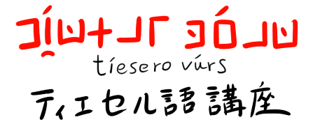
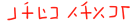
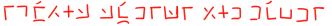

| 1. 文字と発音 |
2. 5つの光調  |
3. 平叙文と格  |
| 4. 否定文と疑問文 - hiteibun to gimonbun - |
5. 形容詞 - keiyousi - |
6. 動詞と法 - dousi to hou - |
| 7. 関係節と従属節 - kankeisetu to juzokusetu - |
8. よくある言い回し - yokuaru iimawasi - |
9. 単語帳 - tangocho - |